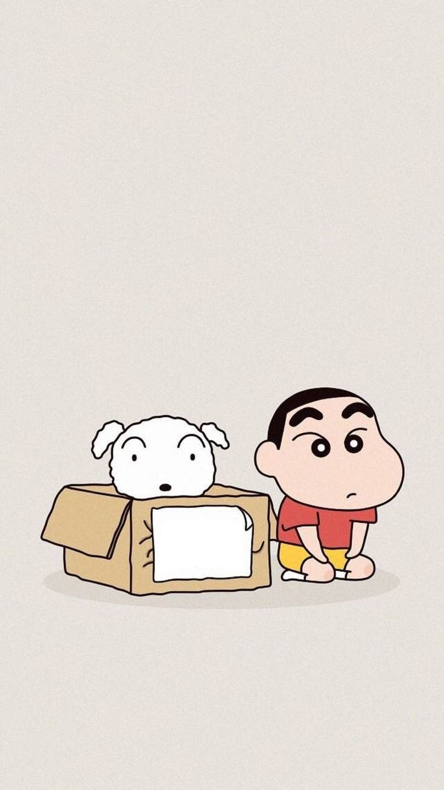

Crayon Shin-chan (Japanese: クレヨンしんちゃん, Hepburn: Kureyon Shin-chan), also known as SHIN CHAN is a Japanese manga series written and illustrated by Yoshito Usui. It follows the adventures of the five-year-old Shinnosuke "Shin" Nohara and his parents, baby sister, dog, neighbours, and best friends and is set in Kasukabe, Saitama Prefecture, Japan.

An animated television adaptation began airing on TV Asahi in 1992 and is still ongoing on several television networks, worldwide. has over 1000 episodes and 26 full-length movies. The show has been dubbed in 30 languages which aired in 45 countries.[7] More than 148 million copies of the manga have been sold worldwide, counting 15 countries, making it the tenth best-selling manga series.[8]